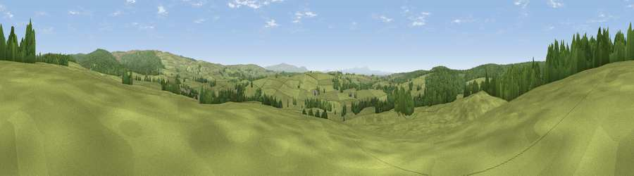

Viewpoint near Bewcastle
#19494 in England · top 45% of its area beats it · near BewcastleWhere it is
The exact computed spot (NY 52575 78675). Click the marker for map links.
The view, rendered

A 360° render of this exact spot computed from the terrain model, tree cover and land cover — summer colours, afternoon light, calibrated against photographs of famous viewpoints. Real trees, hedges and buildings will differ in detail.
The panorama
Grey silhouette: terrain skyline in each direction (720 bearings, Earth curvature and refraction included). Dashed green: skyline with trees (+15 m) and buildings (+8 m) as obstacles. Blue strip: how far the ground is visible on each bearing.
Where the view opens
Wedge length = distance to the farthest visible ground on that bearing (vegetation-aware). Rings at 10, 25 and 50 km.
What fills the view
77% grassland · 22% woodland
Angular shares of the visible panorama (visual magnitude), not map area. Landscape diversity 0.25 (0–1 Shannon).
Key numbers
More beautiful places nearby
The staircase of upgrades: each row has a higher view potential than everything closer. Driving times are estimates from straight-line distance, calibrated against real road routing — check an actual route before setting out.
| Place | Direction | Drive | Score |
|---|---|---|---|
| Brownhill | S · 2 km | ~6 min | 59.8 |
| Roadhead Hill | S · 4 km | ~9 min | 66.4 |
| Viewpoint c11631_6984 | NW · 4 km | ~10 min | 67.3 |
| Viewpoint c11570_6936 | W · 6 km | ~12 min | 70.0 |
| Viewpoint near Bewcastle | E · 6 km | ~13 min | 76.7 |
| Viewpoint near Bewcastle | E · 6 km | ~13 min | 78.9 |
| Viewpoint c11644_7156 | NE · 6 km | ~13 min | 80.8 |
| Viewpoint c11995_7247 | NNE · 23 km | ~38 min | 82.1 |
55.10021, -2.74476 · source: screening · position refined by local search. Computed location — check access rights before visiting.